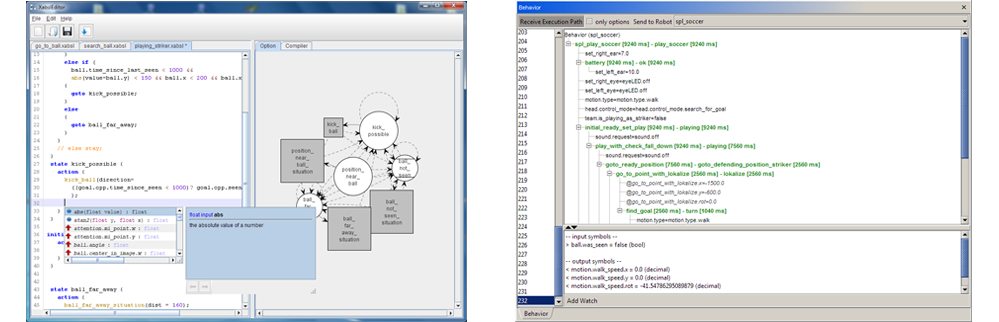
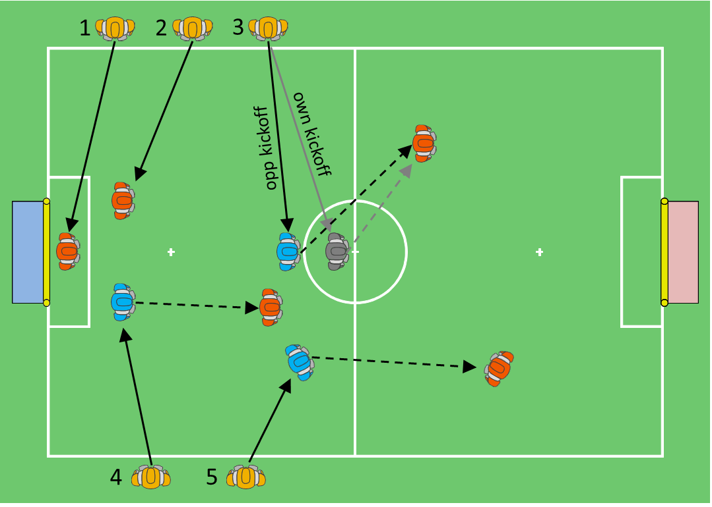

Behavior¶
The Extensible Agent Behavior Specification Language | XABSL cf. [@xabsl_web] is a behavior description language for autonomous agents based on hierarchical finite state machines. XABSL is originally developed since 2002 by the German Team cf. [@2006:IROSLoetzschRislerJuengel]. Since then it turned out to be very successful and is used by many teams within the RoboCup community. We use XABSL to model the behavior of single robots and of the whole team in the Simulation League 3D and also in the SPL.
 (left) XabslEditor: On the left side, you see the source code of a behavior option. On the right side the state machine of this option is visualized as a graph (right). In the main frame the execution path is shown as a tree; at the bottom, some monitored symbols can be seen, the developer can decide which symbols should be monitored; On the left side, there is a list of buffered frames, which is very useful to see how the decisions changed in the past.
In order to be platform independent, we develop our tools in Java. In particular we are working on a Java based development environment for XABSL, named XabslEditor. This tool consists of a full featured editor with syntax highlighting, a graph viewer for visualization of behavior state machines and an integrated compiler. Figure 7.2{reference-type="ref" reference="fig:xabsleditor"} (left) illustrates the XABSL Editor with an open behavior file.
Another useful tool we are working on is the visualizer for the XABSL execution tree, which allows monitoring the decisions made by the robot at runtime. At the current state, this visualizer is part of our debugging and monitoring tool RobotControl. Figure 7.2{reference-type="ref" reference="fig:xabsleditor"} (right) illustrates the execution tree of the behavior shown within the visualizer.
Team Strategy¶
Our team strategy is based on the notion of the active and passive behavior. Active behavior defines for each robot what is to do if the robot is at the ball, while passive behavior describes what is to do if the particular robot is not at the ball. A robot in the active state, i.e., handling the ball, is also referred to as striker.
Essential part of the passive behavior are the home positions. These are fixed positions assigned to each player to which the robot eventually returns if it is in the passive state. This is important in order to keep players at the strategically important positions. At the current point the assignment of players to the passive positions is fixed based on the player number. The start and kickoff positions which robot assume during the ready phase before the game are chosen in the way to minimize the overlapping of the paths of the robots and the distance to be walked. Figure 7.3{reference-type="ref" reference="fig:strategic_positions"} illustrates the different formations - start positions (yellow), kickoff positions (blue) and home positions (red) - as well as the player assignment.
The task of a robot in the active state is to handle the ball, i.e., approach it and move it towards the opponent goal. We use a simulation based approach to chose the best action/kick to perform as described in the Section 5.5{reference-type="ref" reference="s:action_selection"}. In the ideal case there is exactly one player in active state (striker) at all times. We use a team communication protocol to ensure the player with the best chance to get the possession of the ball is in the active state. The details of the negotiation are described in the Section 7.2{reference-type="ref" reference="s:role_decision"}.
The passive and active behaviors are the same for all field players differing only in individual home positions, while goalie has specialized behavior. A small improvement for the goalie this year was, that the goalie tries to block pro-actively a direct goal kick of an opponent to the center of the goal. Therefore, if the goalie sees the ball and the ball is between the penalty cross and half line, the goalie position itself on the crossing between an oval around the goal and within the penalty area and a straight line from the goal center to the ball.
Please refer to the code release for further details of the particular XABSL behaviors for different states (active, passive, goalie) etc.
 Illustration of the different strategic player position: start positions (yellow), ready positions during opponent kickoff (blue), during own kickoff (gray) and home positions (red). For players 1 and 2 all positions are the same respectively. Player 3 is the only one with a different ready position during own kickoff. Solid arrows illustrate the assignment of ready positions to the players. Dashed arrows illustrate the transitions from passive kickoff positions to the corresponding passive positions.
Role Change¶
The task of the role decision mechanism is to determine who is striker and who's passive. In general there should only be one robot which acts as striker. This year we loosened the "only one striker" condition in order to handle wrong perceptions of a ball. So there can be now two striker for two "different" balls. All others are passive, means their're taking a predefined position based on their player number and observing the ball.
The goalie is excluded from the general role decision process in terms of how he decides to become striker. His decision is based on how close the ball is to the own goal - independent from other players. In case the goalie decides to be striker, all the other player become passive - or, if one sees a different ball than the goalie, he can get "second striker".
The decision process which role should be used, runs every cognition cycle and is based on four data points.
-
the previous decision (wants to be striker and was striker)
-
the state of the robot (active, fallen, penalized, etc.)
-
time to the ball
-
player number
Therefore we communicate every \(\sim\)<!-- -->500ms the SPL
standard message and the following informations:
-
is penalized states if the robot is penalized and by this is \"'inactive\"'
-
is/was striker describes if the robot decided to be striker and executed the striker behavior
-
wants to be striker describes whether or not the robot is able to play, sees and is near the ball and therefore wants to be striker
-
time-to-ball an estimation of how fast the robot can approach the ball; for that the robot takes into account his walking, turning and standup speed, if there's an obstacle between his position and, if the ball is moving, whether the ball can be intercepted by the robot.
Every robot calculates the role decision for every team member (including himself) based on the communicated information. With that we should get a consistent distribution of roles throughout the team. We have currently up to four different methods for the role decision process. In the last year we've implemented a new variation and successfully used it in this year competitions. The decision process is executed in two steps:
-
every robot decides if he wants to be striker and announces it to his teammates as "wants to be striker"
-
the striker decision is based on whether the robot is in an "active" state. That means, the robot isn't fallen or penalized and sees the ball.
-
moreover there shouldn't be more than two teammates which already announced to be striker and are closer to the ball
-
-
in the next cognition cycle the robot checks all received messages of its teammates for the ones who "wants to be striker". The player closest to the ball becomes the first striker. The "second striker" is the robot which "wants to be striker", but sees a different ball than the first striker
- hereby 'closest' means, the time the robot needs to approach the ball (see time-to-ball above)
-
only the first & second striker continues to announce "wants to be" striker (see point 1.)
To prevent oscillation the last robot, who was striker, gets a time bonus in terms of "time to ball" and should therefore always be the closest to the ball in situations where two players are approximately in same reaching distance to the ball.
In the whole decision process the goalie has a special role -- he never "wants to be striker". Instead the goalie gets always striker if the ball is near the own goal an the goalie needs to clear the ball. Then the goalie becomes striker, means he executes the striker behavior, and communicates its decision to his teammates. In consequence all teammates become passive in order to fulfill the requirement that there should be only one striker, except there is a player which sees a ball on a different position than the goalie ("second striker").
When we're assuming that all robots have nearly the same information about each other, every robot should come to the same conclusion of who should be striker and who should be passive.
The "two striker for two different balls" approach, allowed us to more often kick the "real" ball, even if the first striker sees a wrong ball.
As last safeguard, if there's only one player left, this player becomes striker.
Teamball¶
The teamball represents a hypothesis of the real ball, based on the ball observations of each player and consolidated to a single position on the field.
The teamball is then used to adjust the search behavior of passive robots and the goalie. In the past years, when the robot was passive and searched for the ball, the robot turned in one direction (randomly) and moves his head to find the ball. With the teamball the robot changes its behavior. Before the robot starts a new search rotation he turns to the teamball and looks in that direction in order to find the ball. If he doesn't see the ball, he continues to turn in the same turning direction as before, until a full round is completed. Before starting a new round, the robot takes again a look at the teamball and re-starts the described behavior. The ball search continues until the robot found the ball or another game event occurs.
In 2017 we reintroduced the teamball in order to improve our ball search behavior. Therefor each player communicated its ball model and collected the global ball position of its teammates over a certain amount of time. In each cognition cycle the median in x and y position of all collected balls where determined and used as teamball in the above described behavior. If there wasn't an update for some time, the teamball was invalidated and not used anymore.
This year, another calculation method was implemented. The "old" teamball was sometimes far away from the "real" ball, because of one de-localized robot or incorrect ball detection of teammates. The new method uses the canopy clustering algorithm to generate clusters of balls, communicated by teammates, and selects the cluster to which most robots contribute. The algorithm works roughly by collecting all communicated balls (global position on the field) and generating clusters of balls. The clustering uses two parameters in order to determine the "cluster membership" of a ball. The "tight distance"' is used to select all balls which are only part of just one cluster and the "loose distance" is used to mark balls which possibly belongs to one or more clusters. After the cluster generation, the cluster center (mean/average) with the most "`members"' is used as teamball. The teamball gets invalidated, if there wasn't an update for a certain amount of time.
With the new calculation method, the teamball was more often closer to the "real" ball and more robust against single robots providing "false" ball information.